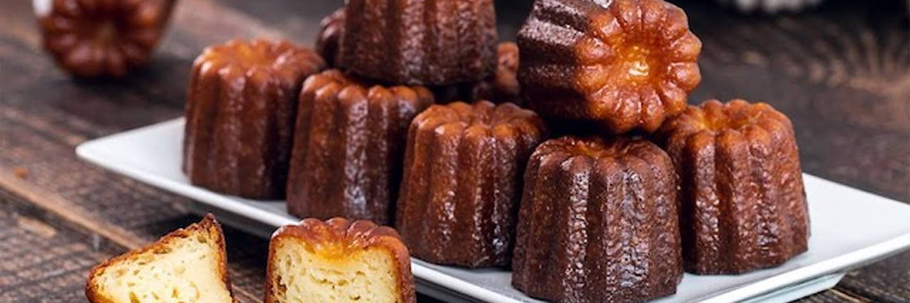

Le canelé Club Bordeaux


Atelier
Le Canelé Club est une association dédiée à la valorisation du patrimoine gourmand bordelais à travers l'un de ses symboles les plus emblématiques : le canelé.
Nous avons à cœur de faire (re)découvrir cette spécialité en la rendant accessible à tous, tout en mettant en lumière son histoire, son savoir-faire et sa richesse culturelle.
À travers des ateliers, des dégustations et des événements, nous créons des moments de partage entre passionnés, curieux et professionnels. Notre ambition est de transmettre cette culture culinaire de manière vivante et conviviale, en rapprochant le public des artisans et en valorisant leur travail.
Notre vision
Avec La Semaine du Canelé Responsable, nous portons une vision plus engagée de la gastronomie. Nous souhaitons montrer qu'il est possible d'allier plaisir et responsabilité, en mettant en avant des pratiques plus respectueuses : utilisation de produits locaux, circuits courts, et réduction du gaspillage.
Dans cette dynamique, le Canelé Club s'inscrit également dans une volonté de modernisation. Nous repensons notre identité visuelle et développons notre présence digitale afin de rendre le canelé plus attractif et en phase avec les nouvelles attentes, tout en respectant ses racines.
Notre communaute
Le Canelé Club, c'est avant tout une aventure collective. Bénévoles, artisans, boulangers, partenaires et participants sont au cœur du projet et contribuent à le faire vivre au quotidien.
Nous croyons en la force du collectif pour faire évoluer les traditions et créer des expériences enrichissantes.
Rejoindre le Canelé Club, c'est intégrer une communauté engagée, dynamique et passionnée, qui œuvre ensemble pour faire rayonner le canelé autrement : plus moderne, plus responsable, plus vivant.
Une spécialité, une histoire
Le canelé fait partie intégrante de l'identité bordelaise. Derrière sa forme reconnaissable et sa texture unique se cache un véritable savoir-faire, transmis au fil des générations.
Le Canelé Club s'inscrit dans cette continuité en mettant en lumière cette spécialité emblématique et en la faisant découvrir à un public toujours plus large.
Notre objectif est de raconter cette histoire, de la partager et de la faire vivre à travers des expériences accessibles, conviviales et ouvertes à tous.
Une expérience à vivre
Plus qu'une association, le Canelé Club propose une véritable expérience.
Ateliers, dégustations, rencontres, événements... chaque initiative est pensée pour créer du lien, éveiller la curiosité et offrir des moments uniques autour du canelé.
Avec La Semaine du Canelé Responsable, nous rassemblons un large public autour d'un événement festif et engagé, où se mêlent gourmandise, découverte et échanges. Une occasion de vivre le canelé autrement, dans une ambiance chaleureuse et dynamique.
Un projet en mouvement
Le Canelé Club est un projet en constante évolution. Nous travaillons à moderniser notre image, à développer notre présence en ligne et à construire une communauté engagée autour de nos valeurs.
En collaborant avec des artisans, des partenaires et des bénévoles, nous faisons évoluer le regard porté sur le canelé. Notre ambition est de lui donner une nouvelle visibilité, plus actuelle, tout en respectant son héritage.
Rejoindre le Canelé Club, c'est prendre part à une dynamique collective et contribuer à faire évoluer une tradition vers l'avenir.
Nos bénévoles